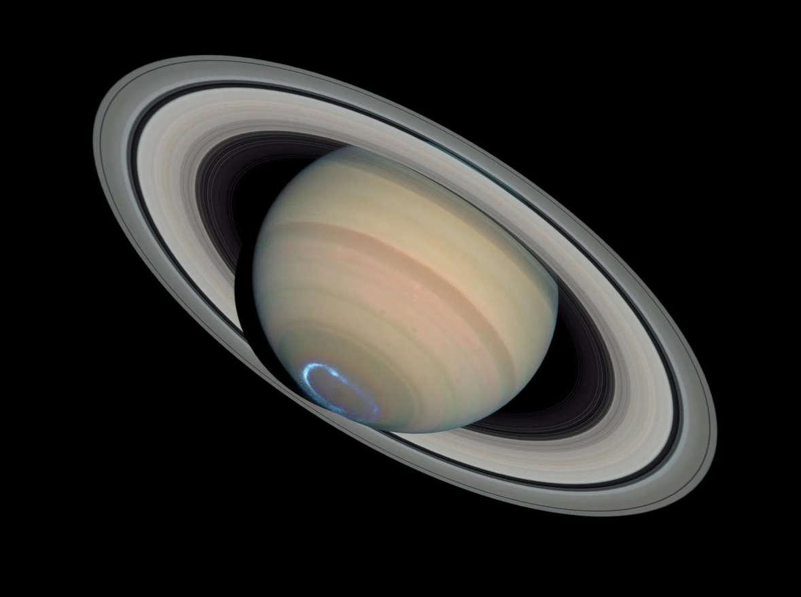
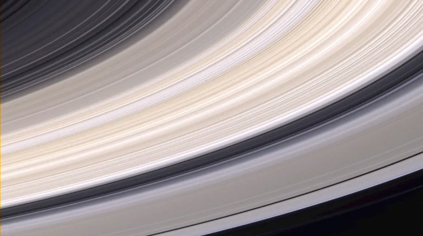

Discover More Topics From Novaspace
Learn more about Black holes, moon, Neptune, Titan, About me, Mercury, and Mars.
Learn MoreJAN 30, 2013
ARTICLE
3 MIN READ
This article is for students grades K-4.
Saturn is a funny-looking planet. True, it’s not the only planet with rings. Jupiter, Uranus and Neptune have rings, too. But Saturn’s rings are the biggest and brightest.
An astronomer named Galileo was the first person to see Saturn’s rings. He spotted them while looking into space through a telescope in 1610. That’s almost 400 years ago! Scientists have been trying to learn more about Saturn’s rings ever since.
The planet Saturn and its rings
Credits: NASA
One thing we know for sure. Saturn’s rings are made of ice and rock. These pieces vary in size. Some are as small as a grain of sand. Others are as large as a house. But scientists aren’t sure when or how Saturn’s rings formed. They think the rings might have something to do with Saturn’s many moons.
Earth has only one moon. But Saturn has at least 60 moons orbiting it that we know about. Asteroids and meteoroids sometimes crash into these moons and break them into pieces. The rings could be made from these broken pieces of moons. The rings may also be made from material left over from when Saturn first formed.
From far away, Saturn looks like it has seven large rings. Each large ring is named for a letter of the alphabet. The rings were named in the order they were discovered. The first ring discovered was named the A ring, but it is not the ring closest to or farthest from Saturn.
This close-up view of Saturn’s rings shows that many tiny rings make up the larger rings around the planet.
Credits: NASA
Some of the rings are close together. Others have large gaps between them. The rings do not sit still. They circle around Saturn at very high speeds. A closer look shows that each large ring is made up of many small rings. The small rings are sometimes called ringlets. More rings and ringlets could still be discovered.
Saturn is much larger than Earth. More than 700 Earths could fit inside Saturn. Saturn’s rings are thousands of miles wide. If there were cars in space, it would take more than a week to drive across some of Saturn’s rings. On the other hand, the rings are quite thin. They are only about 30 to 300 feet thick.
Cassini is the latest NASA spacecraft to explore Saturn. Cassini left Earth in 1997 and arrived at Saturn seven years later, in 2004. The spacecraft has been orbiting the planet since then. Cassini sends new pictures and information back to Earth all the time. Cassini has taken amazing pictures of Saturn’s rings.
Learn more about Black holes, moon, Neptune, Titan, About me, Mercury, and Mars.
Learn More